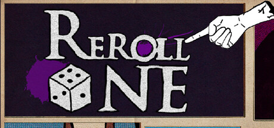
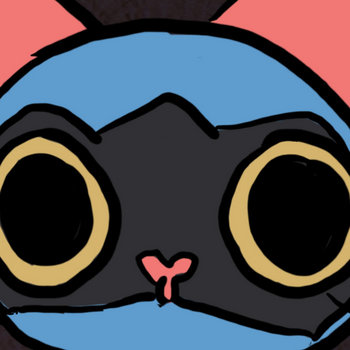
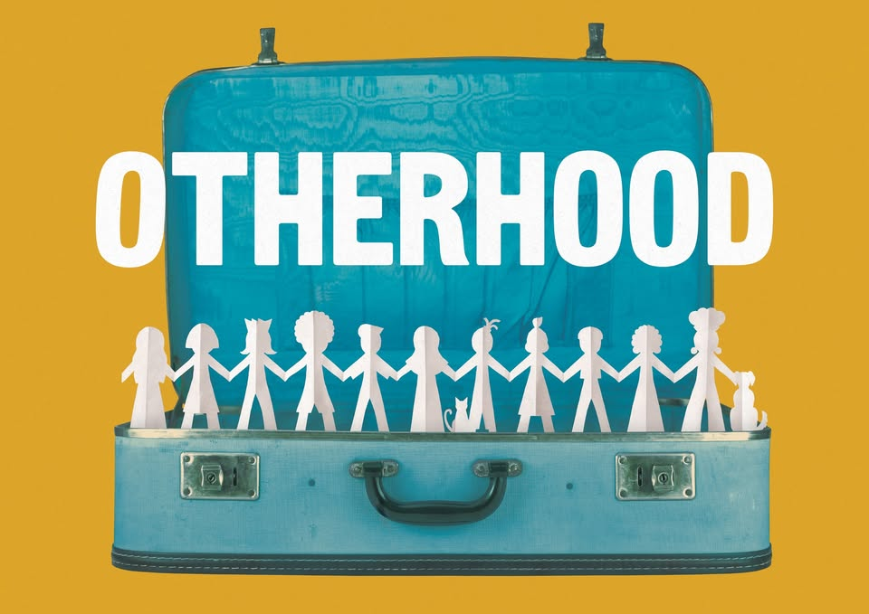
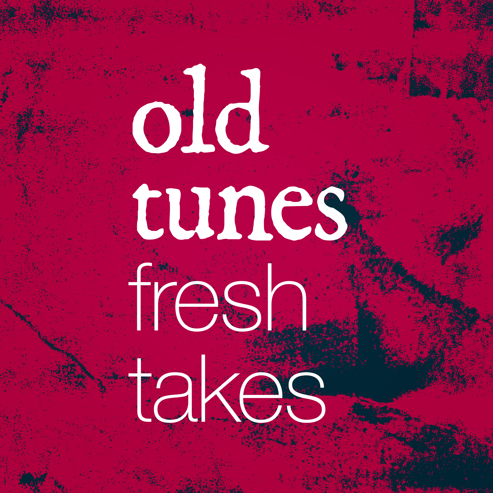
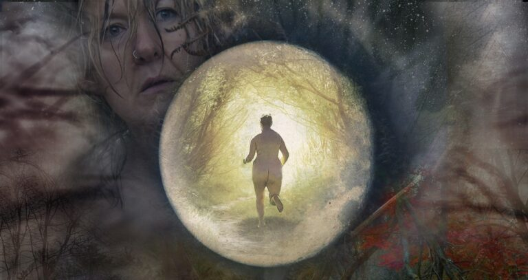

Reroll One - Closed Forum

Composer
A minimalist dice roguelite. Descend through six trials of chance and consequence. Luck isn't random—it's a mirror.
Wishlist now on steam
Cat Adoption Tales - Closed Forum

Composer
Foster and care for adorable hand drawn cats in this cozy 2D sim set to original Lo-Fi music.
Play it now on steam
Listen to the soundtrack on Bandcamp
Otherhood - Old Bird Theatre

Composer, Technical Stage Manager
A grieving widow and a queer millennial discover the power of finding family in unexpected places.
A new theatre experience by Old Bird Theatre featuring an immersive multi-speaker sound system.
Old Tunes Fresh Takes

Presenter, Editor
A community-driven podcast featuring listeners' takes on traditional folk music. Hosted by Jack The Robot and Hevelwood.
Listen now via the Old Tunes Fresh Takes website or wherever you get your podcasts.
Brightside - SLAP Collective
Composer, Technical Stage Manager
Brightside is a workout through a lifetime soundtracked by a millennial anthem. It is a new workout experience that combines the energy of a fitness class with a live dance theatre performance. Made by SLAP Collective this 50-minute immersive journey delves into the past, present, and future of a millennial.
Batty - Victoria Firth

Composer
A new production from Victoria Firth & Company explores the wildness - as opposed to madness - of women, and how our feral side can reconnect us to ourselves and our environment.
Look After Your Knees - Natalie Bellingham
Composer
A new solo work by theatre maker, performer and physical comedian Natalie Bellingham. Look After Your Knees is a show about the pain and beauty of growing older, of connecting and unravelling, of taking hold and letting go.
Find out more here.
These Four Walls - Ellie Harrison & Matt Rogers
Composer
What has it truly been like to be bereaved during the COVID-19 pandemic? How have people coped, when infection control restrictions have made saying goodbye difficult or impossible, and expressions of love and companionship from friends, family and community have been disrupted by social distancing?
Drawing on national research exploring experiences of loss and grief during the pandemic, THESE FOUR WALLS is a short film that gives voice to all those who have been bereaved in the UK.
The Polar Bear (Is Dead) - Nat & Dani
Composer
Have you ever thought about what it means to lose something forever? A treasured possession? Someone you love? Or an entire species?
Natalie and Daniele have made a show about loss and being alone that's ultimately full of hope. It includes a plant, a polar bear, the Spice Girls and a conversation with Natalie's Mum about the end of the world.